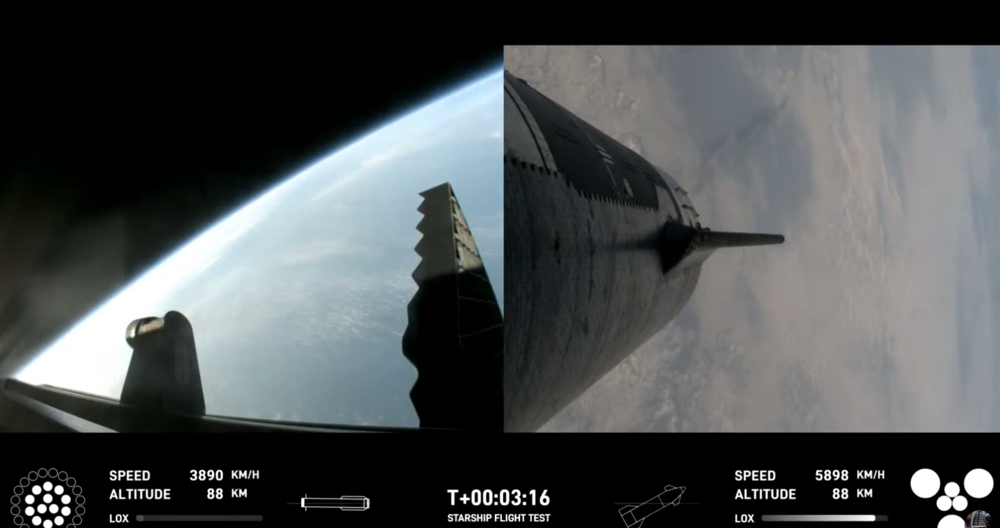
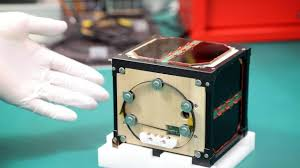

Récap Spatial de la semaine du 03 juin 2024
Bonjour à tous et bienvenue dans le récap spatial
On commence tout de suite avec quelques dates qui pour l’instant sont provisoires mais que j’espères seront officielles.
Boeing a annoncé récemment dans un communiqué sur ses réseaux que potentiellement il y aurai un décollage du Starliner le 01 juin. Malheureusement je ne pourrais pas vous confirmer la date à l’heure où nous enregistrons c’est la date provisoire communiquée mais un report peut tout à fait avoir lieu d’autant que l’entreprise n’en ai pas à son premier.

La société spatiale d’Elon Musk a annoncé qu’une plage de lancement pour leur 4e vol du Starship serait ouverte dès le 5 juin et jusqu’au 10. Le but de ce 4e vol est bien sur de rejoindre l’espace mais aussi effectuer des tests en vol comme un transfert de carburant et bien entendu terminer par un amerrissage réussi.

Le 3 juin prochain, de nombreux sites vendent un « alignement » de six planètes. En réalité, selon l’astrophysicien Éric Lagadec, il s’agit d’un phénomène qui « arrive au moins tous les deux ans ». Il faudra tout de même beaucoup de patience et de moyens pour l’observer. Il sera difficile de l’observer depuis Strasbourg à cause de la pollution lumineuse. Il faut privilégier la campagne ou la montage.

En septembre 2024 décollera le tout premier satellite en bois, grâce à une fusée SpaceX. Une innovation japonaise annoncée mardi 28 mai, permettant d’éviter une pollution supplémentaire, bien que tout lancement reste une source majeure de pollution. Lorsque l’appareil rentrera dans l’atmosphère, ses créateurs s’attendent à ce que le bois de magnolia brûle totalement. Cela permettra d’éviter la formation de particules métalliques lors du retour du satellite sur Terre. Ce sera le tout premier satellite fabriqué et envoyé dans une autre matière que du métal.

Et voilà c’est la fin du récap spatial je vous souhaite une bonne semaine.